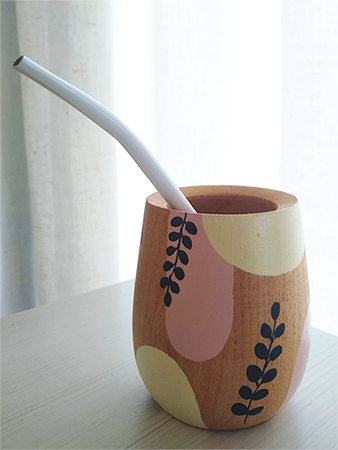
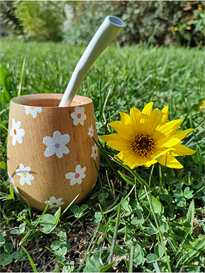
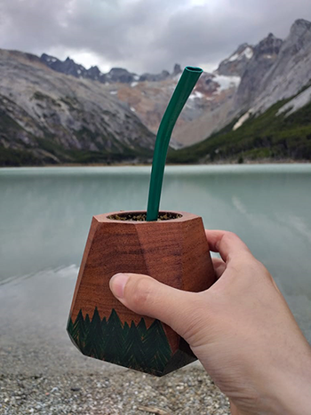

MATES
Mate montañita
Este mate es para los amantes de la naturalez y de los bosques, un mate que evoca la belleza del bosque, con sus formas y aromas.

Mate margarita
Este mate es para los amantes de la naturalez y de los bosques, un mate que evoca la belleza del bosque, con sus formas y aromas.

Mate Prueba
Este mate es para los amantes de la naturalez y de los bosques, un mate que evoca la belleza del bosque, con sus formas y aromas.
